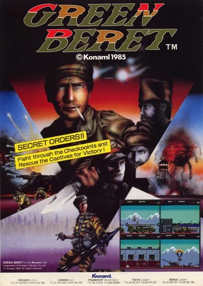

FBA (FinalBurn Alpha)
Green Beret
- Año: 1985
- Desarrollador: Konami
- Género: Plataformas / Disparos con desplazamiento
- Jugadores: 2 jugadores
En plena guerra fría un boina verde recibe la orden de infiltrarse en la principal base de misiles enemiga para liberar a los prisioneros allí retenidos (en NES la misión era destruir un arma secreta). Aunque ira recogiendo
Green Beret fue un videojuego de acción publicado en 1985 por la compañía nipona Konami. En Estados Unidos contó con un título distinto en una campaña de marketing cuya moralidad es bastante discutible. En ese país el título fue Rush'n Attack, el cual fonéticamente decía algo así como "Russian Attack", lo cual, en plena época de Guerra Fría entre EEUU y la URSS, podía sacar a relucir todo tipo de suspicacias. De esta manera, aunque el videojuego simplemente presenta a fuerzas especiales estadounidenses atacando una base militar enemiga, con el título se quería insinuar que se trataba de una base sovietica. Para evitar dicha polémica y con la tónica habitual de Nintendo en estos casos, en la versión de NES se cambió el argumento para que fuese simplemente acabar con un arma secreta enemiga.
Nos encontramos con un videojuego de acción bidimensional dividido en cuatro niveles: Marshalling Area, Harbour, Air Base and Siberian Camp. Inicialmente contaremos con un simple cuchillo para ir dando cuenta de los distintos enemigos que nos salgan al paso, pero en cada nivel podremos conseguir nuevas armas al acabar con determinados enemigos. En el primer nivel podremos conseguir un lanzallamas, en el segundo un RPG (Rocket-propelled Grenade) con cuatro granadas, en la tercera fase podremos hacernos con granadas de mano y en el último nivel podremos conseguir todas las armas anteriormente descritas.
La principal dificultad de Green Beret radicaba en la gran cantidad de enemigos que podían aparecer en la pantalla simultaneamente. Además, estos soldados rivales suelen estar mejor armados que nosotros contando con todo tipo de proyectiles mientras que nosotros estaremos buena parte del juego con un triste cuchillo. Al final de cada fase nos encontraremos con un reto especial, de tal manera que al final del primer nivel nos enfrentaremos a unos karatekas, en el segundo a unos cuantos perros furiosos, en el tercero con tres helicopteros que van disparando y en el último con un experto manipulador de lanzallamas. Además, no nos podemos quedar parados más de 10 minutos, o una gran bomba caerá del cielo para acabar con nosotros.
Controles
Que el jugador 2, en su turno, juegue con sus propios mandos.
Dos botones. Dos jugadores por turnos.
| Panel | Juego |
|---|---|
 | Cuchillo |
 | Arma especial |
 | Moneda |
  | Empezar |
+  | Salir del juego |
El panel en FBA (FinalBurn Alpha)

Longplay

Partida completa de la recreativa (31 min), de AL82 Retrogaming Longplays: Green Beret Longplay (Arcade) [Fixed Sound].